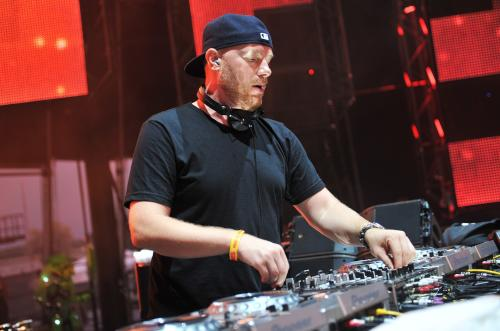

Eric Sheridan Prydz (nato il 19 Luglio 1976), noto anche con il nome di Pryda e Cirez D, è un DJ Svedese, produttore discografico e musicista.
Prydz divenne famoso nel 2004 con il singolo Call On Me, ed ebbe un successo globale con i singoli Pjanoo nel 2008 e Opus nel 2015.
| Titolo | Dettagli | Classifica |
|---|---|---|
| Opus |
|
1 |
| Eric Prydz Presents Pryda |
|
14 |
| Titolo | Anno | Classifica |
|---|---|---|
| Call On Me | 2004 | 29 |
| Proper Education (vs. Pink Floyd) |
2006 | 1 |
| Pjanoo | 2008 | 1 |
| Niton | 2011 | N/A |
| Opus | 2015 | 1 |